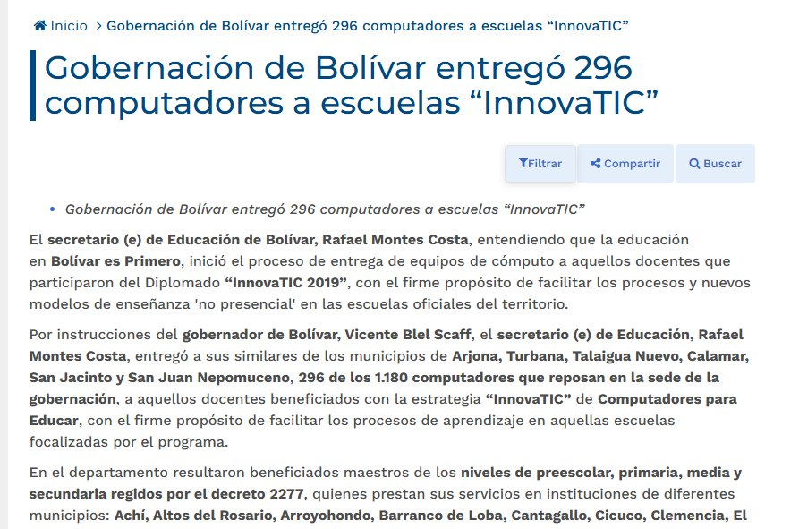
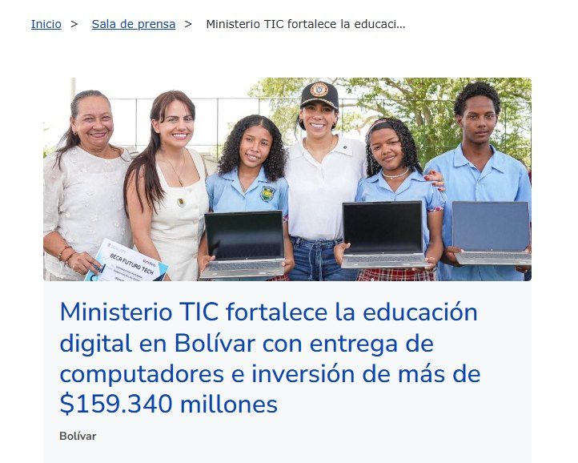
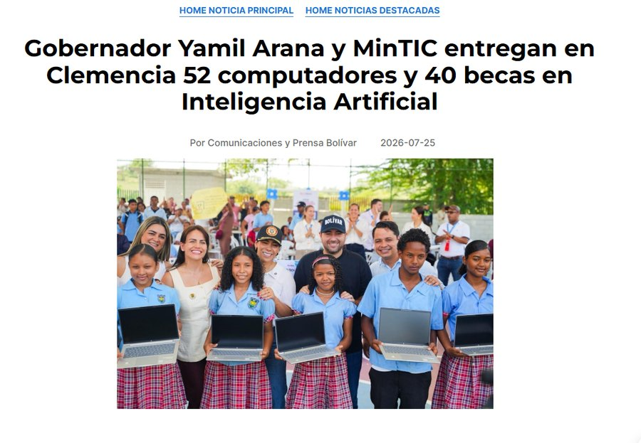
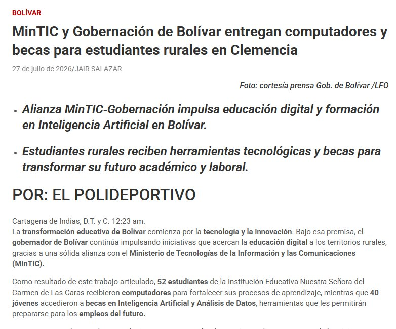

Video: Canal del Dique en su desembocadura a la bahía de Cartagena. Dron: Jorge Escobar y Patricio Winckler (2025).
Videos de Simití, Morales, Turbaco y Mompox: créditos por confirmar.




Un anuncio tras otro le dice a Bolívar que se está conectando: colmenas digitales, computadores para las escuelas, millones de pesos en inversión.
La misma entrega de computadores en Clemencia salió en tres medios distintos. Pero en Clemencia hay apenas 5,7 accesos a internet fijo por cada 100 habitantes. La pregunta que queda: ¿hay conexión para usarlos?
Comprender cómo se comunican e informan, a través de prácticas de comunicación comunitaria, las poblaciones de la ZODES Dique que enfrentan desigualdad conectiva y ausencia de medios propios (2020-2026), como base para diseñar y validar con ellas un atlas web.
1 · Caracterizar la conectividad y los medios registrados en los 13 municipios del Dique, frente a Cartagena y al promedio de Bolívar.
2 · Interpretar cómo circula la información local por prácticas sonoras, digitales e híbridas, y qué la sostiene.
3 · Diseñar y validar con los actores comunitarios un atlas web liviano.
Accesos fijos por cada 100 habitantes, cobertura 4G, tenencia y uso de TIC en los hogares.
Emisoras registradas por tipo y medios locales no registrados.
Medios que intervienen, contenidos que circulan, momentos de uso y combinaciones entre lo sonoro y lo digital.
Historia y relación con Cartagena, organización comunitaria, infraestructura y geografía.
No es una ruptura, sino una transición (Vargas, 2025). En los municipios desconectados, se presume que esa transición está a medias: un audio de WhatsApp termina sonando en el altoparlante, lo que Lévy llama superlenguaje. Allí lo onlife (Floridi, 2015) probablemente llega a ratos.
La brecha no es solo de acceso (van Dijk, 2020), las redes están atravesadas por relaciones de poder (Castells, 2009) y el desarrollo no equivale a la llegada de tecnología (Gumucio-Dagron, 2001).
Sobre el autor
Publicaciones en la revista Komunika
Historia de datos sobre los focos de calor en Colombia, con datos de NASA FIRMS. Visualizaciones: Juan José Tous Ortega. Redacción: Karen Lorena Guayacán Rueda. Diseño: Luisa María García Correa.
Leer en Komunika →Cartagena se calienta por dentro. Treinta y cinco años de imágenes de satélite Landsat muestran que la ciudad construida pasó de estar 3,5 °C a 6,2 °C más caliente que sus zonas verdes, y que buena parte de sus colegios queda en medio de ese calor. Por Juan José Tous Ortega.
Leer en Komunika →